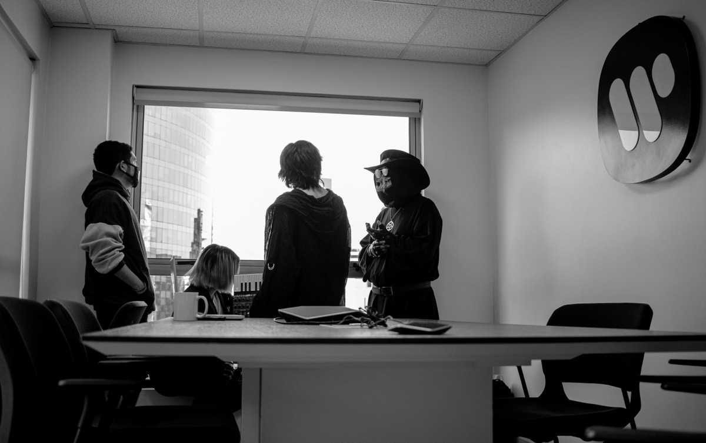
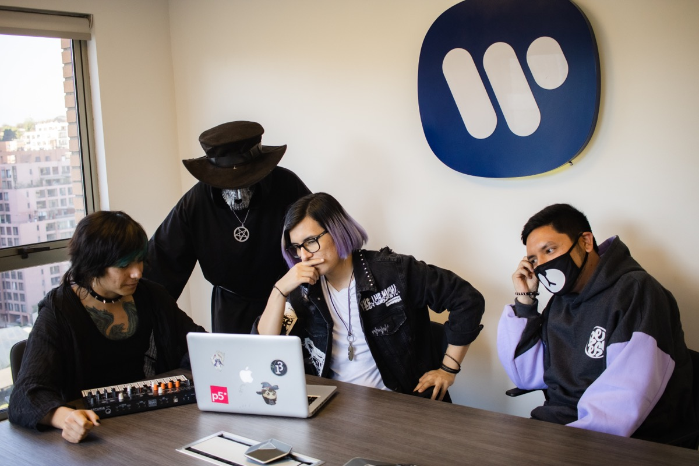

¿Quienes conforman Nikozomik?
Nikozomik se forma en el año
2019, tras la salida de los
hermanos Vernon (Myan) y
Jerome (Dr. Zomik) Belaunde de
otro proyecto, conformando
una idea musical que mezcla
las bases del rock y metal
progresivo con tintes djent,
combinado con la música pop
japonesa provenientes de la
cultura geek de ese país como
el anime y los videojuegos.

La banda conformó su formación cuando en una situación similar, el
guitarrista Esteban Valenzuela se une justo en el proceso de grabación de su primer EP,
“Prologue: Elemental Silhouette”. Durante el encierro de la pandemia del Covid-19, la
banda retrasó su grabación, y en el entretanto contacto con el baterista Sebastián
Fuica, antes conocido por el proyecto Ater Solis, quien termina de cerrar la primera
formación de la banda.
En Junio de 2021 la banda lanza su primer sencillo “Lost in Anima”, recibiendo
alabanzas por parte de medios especializados de Chile y el mundo, destacando su
participación en MTV Germany (Alemania), Waxx Traxx the Maxx (New York), Rockaxis
(Chile) y Radio Futuro (Chile).
En Julio de 2021, el synthesista Franco Bary se une para cerrar por completo la banda
para integrar la electrónica en vivo.
Actualmente la banda está escribiendo su primer capitulo (primer álbum), y espera
lanzarlo a mediados de 2022.
